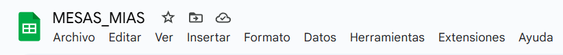
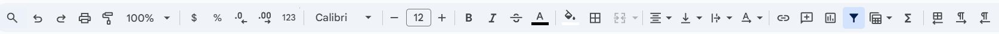
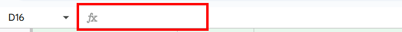
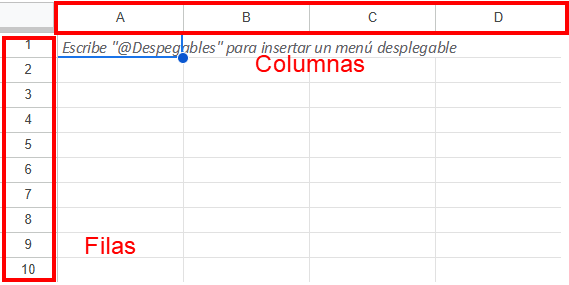
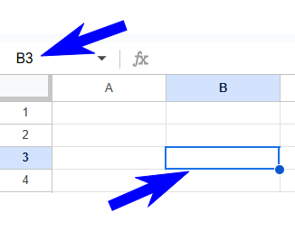
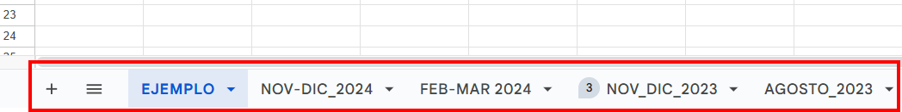
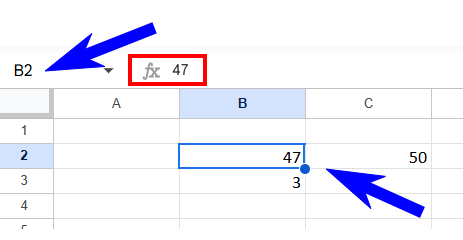
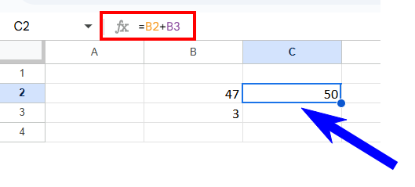

Uso básico de Google Sheets
Introducción
Google Sheets es una herramienta de hojas de cálculo basada en la nube, desarrollada por Google, que permite a los usuarios crear, editar y colaborar en documentos de hojas de cálculo en tiempo real.
Ofrece diversas funcionalidades, como la posibilidad de realizar cálculos, crear gráficos, y organizar datos mediante fórmulas y funciones. Además, permite el trabajo colaborativo, donde múltiples usuarios pueden editar un mismo documento simultáneamente, facilitando la gestión de proyectos y el análisis de datos. Su interfaz es intuitiva y se adapta bien al uso en una biblioteca escolar.
Interfaz de usuario
La interfaz de Google Sheets es intuitiva y funcional, diseñada para facilitar la creación y edición de hojas de cálculo. En la parte superior, se encuentra la barra de menús, que ofrece opciones como Archivo, Editar, Ver, Insertar, Formato, etc. permitiendo acceder a diversas herramientas y funciones.

Justo debajo, la barra de herramientas proporciona accesos directos a funciones comunes como Deshacer, Rehacer, Imprimir, etc.

La barra de fórmulas, situada en la parte superior de la hoja, permite ingresar y visualizar fórmulas o datos de las celdas seleccionadas.

El área principal está compuesta por celdas organizadas en filas (en sentido horizontal, ordenadas por números) y columnas (en sentido vertical, ordenadas por letras), donde los usuarios pueden introducir datos.

Toda celda siempre tendrá una coordenada compuesta por una letra y un número. No existe celda sin esa coordenada. Ejemplo: A1, C15, AX138.
En este caso, celda B3. Nótese que la coordenada aparece a la izquierda de la caja de fórmulas.

Además, las pestañas de hojas en la parte inferior permiten gestionar múltiples hojas dentro del mismo documento.

Manejo básico de datos
Los datos, en una hoja de cálculo se introducen en las celdas por medio del teclado o bien pegando valores.
El pegado puede ser literal (atajo CTRL + V) o solo valores (atajo CTRL + SHIFT + V).
En el primero, si copiamos lo que está en una celda y ese valor es el resultado de una fórmula, pegará la fórmula.
En el segundo, si copiamos lo que está en una celda y ese valor es el resultado de una fórmula, solo pegará el valor limpio.
Es muy importante entender esto. Lo que vemos en una celda no siempre es un valor puro. Para darnos cuenta de esto, procedemos de la siguiente manera: seleccionamos la celda y verificamos si el valor de la misma coincide con lo que aparece en la caja de fórmulas. Si coincide es puro, si no, en la caja de fórmulas veremos la fórmula y en la celda el resultado.
El valor de la celda B2 coincide con lo que aparece en la caja de fórmulas.

El valor de la celda C2 no coincide con lo que aparece en la caja de fórmulas. En la celda C2 se muestra el resultado de la operación que se está realizando y que podemos ver en la caja de fórmulas. En este caso, la suma de B2 y B3.
